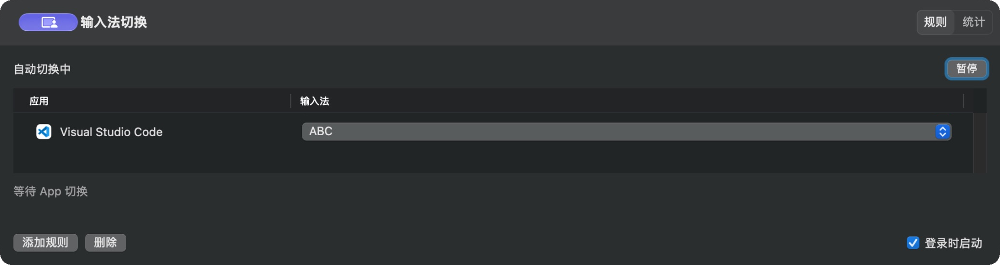
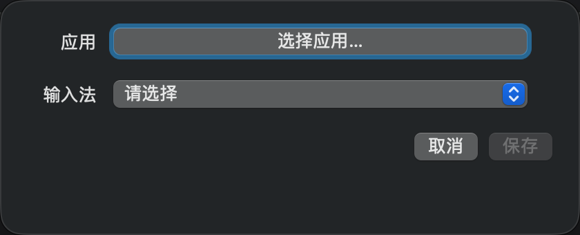
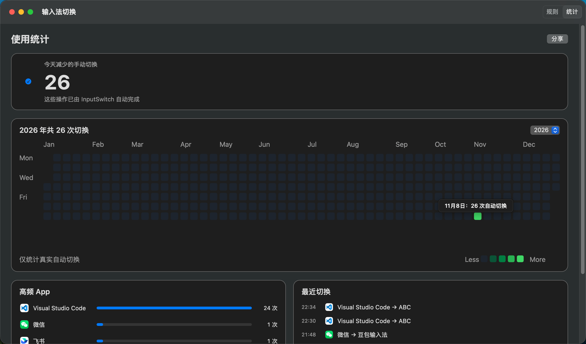

macOS 原生小工具 · 免费开源
进入应用，
自动切换输入法
让 VS Code 永远停在 ABC，让微信直接进中文输入。为每个应用指定一次输入法，切换应用时自动生效，无需反复手动切换。
需要 macOS 13 或更高版本 · 无第三方依赖

三步上手
-
添加规则
点击「添加规则」，在弹窗中选择应用和对应的输入法。已有规则可以直接点击输入法列重新选择。
-
自动生效
切换到已配置的应用时，InputSwitch 在需要时自动切换输入法。临时不需要自动切换，可随时暂停。
-
查看统计
通过年度热力图、高频 App 和最近切换记录查看使用效果。可勾选「登录时启动」，并从 Dock 或应用切换器随时返回。

统计看得见，数据不出本机
「统计」页记录每天由 InputSwitch 自动完成的切换次数，用年度热力图、高频 App 排行和最近切换记录展示使用效果；鼠标停在热力图格子上可查看当天详情。
- 规则和统计仅保存在本机，不记录输入内容，也不会自动上传。
- 只有主动点击「分享」时，统计才会交给系统分享服务。
- 关闭窗口不会退出应用，可从 Dock、应用切换器或菜单栏返回。

安装与首次打开
-
下载并打开 DMG
下载 InputSwitch 0.1.4（需要 macOS 13 或更高版本），双击打开下载的 DMG。
-
拖入应用程序
将 InputSwitch 拖入 Applications 文件夹。
-
从应用程序启动
在「应用程序」文件夹中启动 InputSwitch，添加第一条规则即可。
首次打开的安全提示
当前版本使用 ad-hoc 签名，未经过 Apple 公证。在其他 Mac 上首次打开时，macOS 可能提示「无法验证开发者」并阻止打开。这表示 Apple 尚未核验开发者身份，不是病毒检测结果。建议只从本仓库 Releases 下载。
放行只需要两步，无需关闭 Gatekeeper 或 SIP，也无需运行任何终端命令：
- 在 Finder 的「应用程序」中右键点击 InputSwitch，选择「打开」，再确认「打开」。
- 如果仍被阻止，打开「系统设置 → 隐私与安全性」，在安全性区域找到 InputSwitch 的「仍要打开」并确认。
项目源代码公开，可以检查代码或自行从源码构建；规则和统计仅保存在本机。